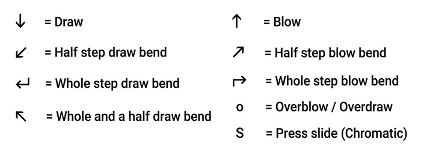
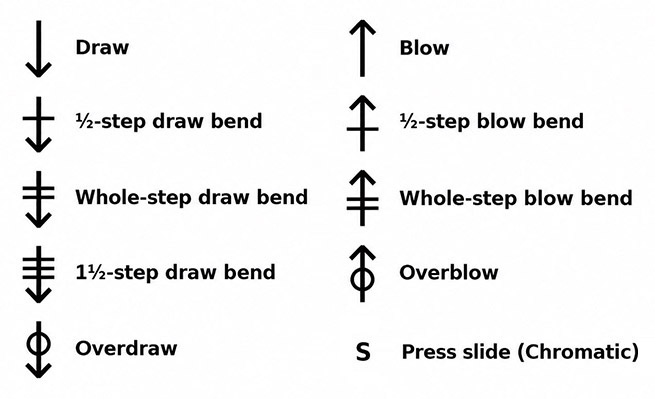

Play ABC tunes with synchronized diatonic, chromatic, and custom harmonica diagrams.

4 = blow -4 = draw -3' = 1-semitone bend -3'' = 2-semitone bend -3''' = 3-semitone bend6o = overblow -7o = overdraw 1s = slide-in x = note unavailable-, ', o, s, and x are used. Hole numbers must fit the selected instrument.
Overview
Load, type, or paste ABC tunes and play them with synchronized standard notation and a simulated horizontal harmonica for built-in diatonic and chromatic styles or custom 8-, 9-, 10-, 12-, 14-, and 16-hole tunings.
The active hole is highlighted while the symbol below it shows the required breath direction or technique.
The player includes built-in presets for: Standard Richter , Paddy Richter , Easy Thirds , Melody Maker , Country (Major 7th) , Natural Minor , Solo (10-Hole), Solo (12-Hole), Seydel Orchestra-S (10-Hole), Seydel Shamrock Pocket Melodeon (9-Hole), PowerBender, PowerDraw, and 12- and 16-hole Chromatic harmonicas.
Harmonica Settings
Harmonica tuning chooses the note layout. In addition to the six established 10-hole diatonic presets, the player includes Solo 10-hole, Solo 12-hole, Seydel Orchestra-S 10-hole, the 9-hole Seydel Shamrock Pocket Melodeon, PowerBender, PowerDraw, and 12- and 16-hole chromatic layouts. PowerBender and PowerDraw are 10-hole tunings and are available in the same 12 keys as Standard Richter. The Seydel Shamrock Pocket Melodeon preset is available only with the player key set to C.
The bottom of the Harmonica tuning menu also contains an option for using a custom tuning and Configure Custom Tuning....
See Custom Harmonica Tuning below for complete instructions on creating, saving and loading custom tunings.
Harmonica key chooses G, G#, A, Bb, B, C, C#, D, Eb, E, F, or F#. For the Seydel Shamrock Pocket Melodeon, the key is fixed at C even though the physical instrument is described as being in D. For this preset, C means that the supplied Pocket Melodeon note map is used at its original concert pitches with no additional transposition.
Octave shift shifts the harmonica fingering assignment by whole octaves from -3 through +3 without changing the written ABC notes.
Playback transpose shifts the playback pitch from -12 through +12 semitones without changing the written ABC notes or the displayed harmonica holes and technique indications.
This can make it possible and simple to play tunes on a harmonica in a key different from the tune.
If the ABC contains a %%MIDI transpose directive, the Playback transpose setting takes precedence during playback; the original ABC is not changed.
Harmonica tuning, key, octave shift, and playback transpose are remembered in this browser and included in share links.
Harmonica Technique Symbols
Each diagram shows the correct number of holes for the selected harmonica.
Display selects how the current harmonica technique is shown.
There are three options: Use Arrows, Use Bars, and Text.
Use Arrows (the default) uses directional arrow shapes for blow, draw, and bends, with o for overblow/overdraw and S for the chromatic slide.
If the current instrument definition contains an s on any note in its tablature map, the harmonica diagram also shows an animated physical slide. This applies to both built-in and custom instruments; the slide moves in for notes marked with s and remains out for other notes.
In Use Arrows or Use Bars display mode, click Legend to display the technique symbols in a floating window while using the player. Drag the window by its title bar to reposition it and click × to close it. The Legend shows the symbols for the currently selected style. The Legend button is hidden in Text display mode.
Use Bars uses straight up/down breath arrows, horizontal bars across the arrow for bend depth, a circle centered on the arrow shaft for overblow or overdraw, and S for the chromatic slide.

Text uses the original ABC Transcription Tools harmonica tablature text. Numbers correspond to the holes on the harmonica. A number alone indicates blow. Draw is indicated by – before the number. Bends are indicated by ', '', or ''' after the number. Overblow is indicated by o after the number. s indicates pressing the slide on Chromatic instruments.
The Display setting is remembered in this browser, including the selected Use Arrows, Use Bars, or Text mode.
ABC Editing and Notation
Editing the ABC rebuilds the notation and harmonica solution. Clicking a rendered note selects the complete ABC note token and updates the harmonica display to that note.
Use the editor text-size menu to change the ABC editor text size.
Show note displays the current note on a staff beside the note name and is remembered in this browser.
The Full-Page View buttons expand the ABC editor, notation, or harmonica display to fill the page. Press Escape to leave a full-page view; the harmonica view also provides an Exit Full-Page button.
Playback
Playback follows the notation cursor and harmonica display, highlighting the current harmonica hole and technique as the tune plays.
Use the playback controls below the notation to start or pause the tune, restart from the beginning, turn looping on or off, move to a different position in the tune, and change the playback speed.
Mute Melody turns the melody sound off or back on. This is useful when you want to play the melody yourself while keeping any accompaniment or metronome.
Metronome adds a click during playback. If the selected tune uses a meter for which a metronome pattern is not available, the tool will let you know and leave the metronome off.
Count in? adds a five-second on-screen countdown before playback begins.
Click Tempo to set the playback speed from 10% to 200% of the tune's normal tempo. The playback speed control below the notation shows and changes the same percentage.
Saving and Sharing
Save writes the current ABC collection to a file.
Share opens the Sharing Controls dialog. Choose Share Current Tune for the currently displayed tune or Share All Tunes for the complete loaded collection.
The Sharing Controls dialog closes and the selected link opens in a Share Link dialog where you can copy it, save it as a text file, test it in a new browser tab, or open the ABC in the ABC Transcription Tools. Click Close to close the Share Link dialog.
The link includes the selected harmonica tuning, key, octave shift, and playback transpose.
Open in ABCTT opens the selected ABC in the ABC Transcription Tools ABC Editor in a new browser tab using the player's normal instrument-specific conversion settings. For a Lesson Share Link, lesson-only information is omitted and only the tune and applicable instrument settings are sent to ABC Transcription Tools.
When the selected harmonica tuning is a custom tuning, the complete custom tuning is included in the share link, including its name, hole count, and all 60 tablature note assignments.
Opening a share link that contains a custom tuning temporarily uses the custom tuning from the link without replacing the custom tuning already saved in that browser.
A share button is disabled when its resulting link would exceed the maximum allowed of 8100 characters.
Opening a share link restores its harmonica tuning, key, octave shift, and playback transpose and displays the first tune encoded in the link.
Settings received from a share link are used for that visit without changing your saved preferences. If you change any player setting, the current share-link settings become your saved preferences too. Opening a file with Browse loads its ABC only and does not change player settings.
When tunes are opened from a share link, click the Click to Enable Playback button in the playback area before using the normal playback controls.
This user action allows audio playback to be initialized on browsers that require a user gesture before starting audio.
Custom Harmonica Tuning
It works with custom harmonica tablature settings files saved from the ABC Transcription Tools if they contain only the allowed tablature syntax described below.
After you give the custom tuning a name and save it, that name is shown near the bottom of the Harmonica tuning menu.
Selecting that named custom tuning uses its tablature map.
Selecting Configure Custom Tuning... opens the custom tuning editor without changing the currently selected tuning.
The editor contains a five-octave, 60-note custom harmonica tablature map compatible with the custom harmonica tablature settings used by ABC Transcription Tools.
The custom tuning initially matches Standard Richter.
Enter a custom tuning name and choose whether the physical harmonica has 8, 9, 10, 12, 14, or 16 holes.
Each note entry must use the ABC Transcription Tools harmonica tablature syntax described below. Examples of valid entries include:
4 = blow.
-4 = draw.
-3' = 1-semitone bend.
-3'' = 2-semitone bend.
-3''' = 3-semitone bend.
6o = overblow.
-7o = overdraw.
1s = slide-in.
x = note unavailable.
Only the supported blow, draw, bend, overblow/overdraw, and slide combinations are allowed.
Every referenced hole number must be within the selected 8-, 9-, 10-, 12-, 14-, or 16-hole instrument size before the tuning can be saved.
Load Tuning File loads a .txt custom harmonica tuning file saved by ABC Transcription Tools or by this player.
Loading a tuning file places it in the editor for review; it does not replace your saved custom tuning until you click Save.
ABC Transcription Tools custom tuning files do not contain a hole count, so the player infers an initial 8-, 9-, 10-, 12-, 14-, or 16-hole setting from the highest hole number referenced in the file: holes 1–8 infer 8 holes, hole 9 infers 9, hole 10 infers 10, holes 11–12 infer 12, 13–14 infer 14, and 15–16 infer 16.
After loading a file without a hole count, you may change the hole count to any of the six choices while editing, including a smaller size.
The selected hole count and all tablature entries are validated when you save the tuning to the player or save it to a file.
A tuning cannot be saved while it contains an invalid entry or an out-of-range hole reference.
Invalid files do not replace your previously saved custom tuning.
Files saved by this player include the hole count.
Those files can still be loaded by ABC Transcription Tools, which ignores the additional hole-count field.
Save Tuning File validates the custom tuning name, selected hole count, and all 60 tablature entries before saving.
After validation, you are asked for a file name.
The suggested file name is based on the custom tuning name.
Initialize from Preset opens a dialog where you can initialize the editor from any built-in tuning or choose Reset All to x.
Applying a built-in preset copies its map into the editor, sets the name to Custom followed by the preset name, and selects the matching hole count. The 8- and 14-hole sizes are available for custom tunings even though there are currently no built-in presets with those hole counts. Initializing from Seydel Pocket Melodeon selects 9 Hole.
Reset All to x fills all 60 entries with x, names it New Tuning Preset, and selects 10 Hole.
Initialization only changes the editor; it is not stored until you click Save in the main custom tuning dialog.
The dialog's Save button validates and stores the custom tuning name, hole count, and tablature map in this browser for reuse.
After a valid custom tuning is saved, the player automatically switches to that custom tuning.
Cancel closes the editor without replacing the previously saved custom tuning.
When a share link uses the custom tuning, the complete custom tuning is embedded in the link, including its name, hole count, and all 60 tablature note assignments.
The custom tuning from the share link is used temporarily and does not replace the custom tuning already saved in the recipient's browser.
To keep the shared custom tuning for future use, make any change to the settings, or open the custom tuning dialog and click Save.
Volume Override URL Parameters
Three optional URL parameters can override playback volume settings:
volume= sets the harmonica volume using a decimal value from 0 to 1.0. The default is 0.5.
bassvol= sets the MIDI bass accompaniment volume using an integer value from 0 to 127. The default is 64.
chordvol= sets the MIDI chord accompaniment volume using an integer value from 0 to 127. The default is 64.
For example:
?volume=0.6&bassvol=72&chordvol=56
If the URL already contains other parameters, after the other parameters, append the volume parameters using & .
The volume settings are not saved in this browser. If a volume override is present in the current URL, it is included in generated share links and restored when those links are opened.
fadems= sets the harmonica sample fade time in milliseconds using an integer value from 10 to 200. The default is 60 milliseconds.
For example:
?fadems=60
If the URL already contains other parameters, after the other parameters, append the fadems parameter using & .
The fadems setting is not saved in this browser. If a fade-time override is present in the current URL, it is included in generated share links and restored when those links are opened.
Using Playback Transpose
Playback Transpose can be useful in many situations where you want the playback pitch to match the harmonica you actually have while keeping the displayed fingering appropriate for the tune. The following example uses a C diatonic harmonica because it is a straightforward way to see how the feature works.
Say the only diatonic harmonica you have is in C, but you'd like to play along with tunes in other common keys without requiring a lot of bends.
For a tune in D major:
Select a D harmonica in the player.
Set Playback Transpose to -2.
Then play the displayed holes on your C harmonica.
The playback is shifted to match your C harmonica, but the hole display continues to show the much more convenient fingering you'd use if you actually had a D harmonica.
The same idea works with modes.
For a D Mixolydian tune, use the harmonica that matches the major key of its key signature, which is G.
Select a G harmonica.
Set Playback Transpose to -7.
Then play the displayed holes on your C harmonica.
You can also use +5 instead of -7 if you prefer the playback an octave higher.
A simple rule for some common Irish tune keys is:
D major / E Dorian → D harmonica → Playback Transpose -2
G major / A Dorian / D Mixolydian → G harmonica → Playback Transpose -7 (or +5)
So even if the only diatonic you have is in C, Playback Transpose can make it much easier to play along with tunes in a variety of keys while keeping bends to a minimum.
Trademarks
Hohner, Suzuki, Tombo, and Seydel, and their referenced product or model names, are trademarks of their respective owners. PowerBender and PowerDraw are harmonica tuning systems developed by Brendan Power. This independent tool is not affiliated with or endorsed by any of them.
ABC Tremolo Harmonica Player
For tremolo harmonicas, try the ABC Tremolo Harmonica Player. It supports the Suzuki SU-13M and Tombo 3116, 2116, 1521, 3121, and 3124 tremolo harmonica layouts.
Lesson Information for Music Teachers
Share opens the Sharing Controls dialog. Choose Configure Lesson… to create, edit, save, load, or share a lesson for your students.
A lesson uses the current tune only.
Enter a lesson title and instructions in the Configure Lesson dialog.
The lesson title and instructions are remembered in this browser while you work and are restored the next time you open Configure Lesson.
Save Lesson Configuration saves a reusable text file containing the current tune, lesson title, instructions, and the same player settings carried by a normal Harmonica Player share link.
Load Lesson Configuration can open either a saved Lesson Configuration file or a Lesson Link saved as a text file.
Those saved player settings are Harmonica tuning, Harmonica key, Octave shift, and Playback transpose.
You can also open a saved Lesson Configuration with the main ABC file Browse button. In this case, only the ABC tune is loaded; the lesson title, instructions, and saved player settings are not applied.
If one or more tunes are already loaded, the tool asks for confirmation before replacing them with the lesson tune.
Loading a lesson configuration restores its tune, lesson title, instructions, and saved player settings. The restored player settings also become your saved preferences for future use.
Create Lesson Link creates a share link for the current tune containing the lesson title and instructions plus the same player settings carried by a normal share link.
The generated lesson link opens in the same Share Link dialog, stacked over the Configure Lesson dialog, where it can be copied to the clipboard, saved as a text file, tested in a new browser tab, or opened in the ABC Transcription Tools with lesson-only parameters removed. Click Back to close the Lesson Share Link dialog and return to Configure Lesson.
Lesson Information for Students
Your music teacher may provide you with a Harmonica Player lesson link.
Open the lesson link in your web browser to load the tune, lesson instructions, and the player settings chosen by your teacher.
Read the lesson information that appears, then click Start Lesson when you are ready to begin.
After clicking Start Lesson, click Click to Enable Playback to enable the audio playback controls.
The lesson setup controls and the lesson tune selector are shown at the top of the player but are initially disabled so the teacher's lesson setup cannot be changed.
The Browse and Save controls remain available while you are using a lesson, but the Share control is hidden so you cannot create share links or lessons.
You can use the normal notation, fingering display, playback, tempo, metronome, count-in, display, and full-page controls while working on the lesson.
You can edit the ABC if your teacher asks you to make changes.
Click Save to save your edited ABC.
You can use Browse to load a saved ABC file back into the player or open another ABC file. The lesson's player settings remain locked. After you load an ABC file, the tune selector is unlocked so you can select any tune in that file.
About
This tool was created by
Michael Eskin
If you find it useful, please consider a contribution via
Michael Eskin's Tip Jars